Control Engineering 1 · Week 07 · 모델 표현을 바꾸어도 같은 응답일까?
본인 사본에서 코드와 작성란을 직접 수정하세요. 이름: ⟦직접 입력⟧ / 학번: ⟦직접 입력⟧
실행 방법
Live Editor에서 코드 안을 클릭하고 Run Section으로 현재 Section을 실행하세요(Windows/Linux Ctrl+Enter, Mac ⌘+Enter). Run은 문서 전체를 실행합니다. 설명·작성란은 직접 편집하세요.
처음에는 위에서부터 실행하고, 값을 바꾼 Section은 다시 실행하세요. 변수가 없다는 오류가 나면 앞 Section부터 실행하세요. 출력은 코드 아래 또는 오른쪽에 표시됩니다.
환경: MATLAB Online과 Control System Toolbox.
1. 모델 변환과 좌표변환
아래 계산을 먼저 수행한 뒤 MATLAB 결과와 비교하세요.
모델은  ,
,  입니다.
입니다.
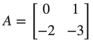
,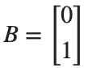
,- 주어진 모델의
 를 읽어 두 State Equation을 손으로 쓰세요.
를 읽어 두 State Equation을 손으로 쓰세요. - Initial Condition을 0으로 놓고 두 State Equation을 Laplace Transform하세요. 첫 번째 식에서
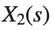
를 로 나타내 두 번째 식에 대입하고,
로 나타내 두 번째 식에 대입하고, 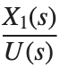
를 구하세요. 일 때
일 때  와
와 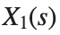
의 관계를 써서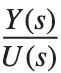
로 정리하세요. 이어서 이면 출력식이 어떻게 바뀌는지 적으세요. - 그 다음 tf 결과와 비교하세요.
좌표변환에는
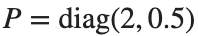
, Initial State에는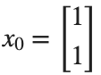
을 사용하세요.- 행렬변환 코드를 실행하기 전에
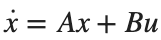
에 ,
, 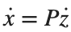
를 대입하고 양변에 을 곱하세요.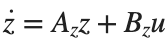
에서 에 해당하는 행렬을 구하세요. 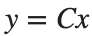
에도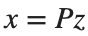
를 대입하고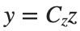
의 를 구하세요.- Initial State는 에서 를 구하세요. 직접 구한 세 행렬과 를 각 Section 첫 조건의 코드 결과와 대조하고, 해당 조건의 계산 기록으로 사용하세요.
코드 실행 전 — 손으로 계산한 식과 값: ⟦여기에 계산을 적으세요⟧
코드 실행 후 — 비교할 MATLAB 출력값: ⟦출력값을 적으세요⟧
2. 변환 전후의 응답
Initial Condition이 모두 0일 때의 Input–Output 비교입니다.
실행 전 예상: ⟦직접 입력⟧
A=[0 1;-2 -3];B=[0;1];C=[1 0];D=0;sys=ss(A,B,C,D);G=tf(sys);
t=(0:.01:10)';y1=step(sys,t);y2=step(G,t);
disp(size(A));disp(G);disp(max(abs(y1-y2)));assert(max(abs(y1-y2))<1e-8);
직접 수행:
- 첫 코드 Section의 A,B,D는 유지하고 C=[0 1]로 바꾼 뒤 sys와 G=tf(sys)를 다시 만드세요.
- 같은 시간축에서 step(sys,t)와 step(G,t)를 계산하고, 두 출력의 최대 절대 차이를 기록하세요. 최대 절대 차이가
 보다 작은지 판정하세요.
보다 작은지 판정하세요. - 변경 전후의 출력식
 와 DC Gain을 나란히 적고, 선택한 State가 달라져 출력과 DC Gain이 바뀌는 이유를 설명하세요.
와 DC Gain을 나란히 적고, 선택한 State가 달라져 출력과 DC Gain이 바뀌는 이유를 설명하세요.
% ✍ 직접 작성: 아래에 본인 코드를 추가하세요.
바꾼 조건: ⟦직접 입력⟧
실제 결과: ⟦직접 입력⟧
예상과 차이 및 원인: ⟦직접 입력⟧
3. State 좌표 스케일 변경
x=Pz 관계를 먼저 적습니다.
실행 전 예상: ⟦직접 입력⟧
A=[0 1;-2 -3];B=[0;1];C=[1 0];P=diag([2 .5]);
Az=P\(A*P);Bz=P\B;Cz=C*P;
sys=ss(A,B,C,0);transformed=ss(Az,Bz,Cz,0);
t=(0:.01:10)';err=max(abs(step(sys,t)-step(transformed,t)));disp(err);assert(err<1e-8);
직접 수행:
- P=diag([3 2])로 바꾸고, Az=P\(A*P), Bz=P\B, Cz=C*P로 Az,Bz,Cz를 다시 계산해 행렬을 기록하세요.
- 같은 시간축에서 원래 모델과 변환한 모델의 Step Response를 구하고, 두 출력의 최대 절대 차이를 기록하세요. 최대 절대 차이가
 보다 작은지 판정하세요.
보다 작은지 판정하세요. - 행렬의 원소는 달라져도 출력이 같은 이유를
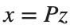
와 출력식의 관계로 설명하세요.
% ✍ 직접 작성: 아래에 본인 코드를 추가하세요.
바꾼 조건: ⟦직접 입력⟧
실제 결과: ⟦직접 입력⟧
예상과 차이 및 원인: ⟦직접 입력⟧
4. 초기값 변환 오류 수정
앞 Section에서 만든 모델을 사용합니다.
실행 전 예상: ⟦직접 입력⟧
x0=[1;1];z0=P\x0;
yx=initial(sys,x0,t);yz=initial(transformed,z0,t);wrong=initial(transformed,x0,t);
disp([max(abs(yx-yz)),max(abs(yx-wrong))]);assert(max(abs(yx-yz))<1e-8);
figure;plot(t,[yx,yz,wrong]);legend('original','correct transformed','wrong initial state');grid on;
직접 수행:
- Initial State를 ,
 , 로 각각 지정하세요. 나머지 모델·좌표변환 행렬 P·시간축은 해당 Section의 값을 유지합니다.
, 로 각각 지정하세요. 나머지 모델·좌표변환 행렬 P·시간축은 해당 Section의 값을 유지합니다. - 각
 에서 원래 모델의 initial(sys,x0,t)와 변환한 모델의 initial(transformed,P\x0,t)를 구하세요. 같은 변환 모델에 x0를 그대로 넣은 출력도 계산하세요.
에서 원래 모델의 initial(sys,x0,t)와 변환한 모델의 initial(transformed,P\x0,t)를 구하세요. 같은 변환 모델에 x0를 그대로 넣은 출력도 계산하세요. - Initial State별로 올바르게 변환한 출력과 원래 출력의 최대 절대 차이, 초기값을 그대로 사용한 출력과 원래 출력의 최대 절대 차이를 두 열로 기록하세요. 두 경우가 다른 이유를
 와 연결해 설명하세요.
와 연결해 설명하세요.
% ✍ 직접 작성: 아래에 본인 코드를 추가하세요.
바꾼 조건: ⟦직접 입력⟧
실제 결과: ⟦직접 입력⟧
예상과 차이 및 원인: ⟦직접 입력⟧
반복 숙달과 제출 전 확인
앞의 직접 수행에서 비교한 조건 세 가지를 아래에 정리하세요. 이미 수행한 실험을 추가로 반복할 필요는 없습니다. 예상은 정확한 수치 대신 증가·감소 방향으로 적어도 됩니다.
반복 1 — 조건: ⟦직접 입력⟧ / 예상: ⟦직접 입력⟧ / 실제: ⟦직접 입력⟧
반복 2 — 조건: ⟦직접 입력⟧ / 예상: ⟦직접 입력⟧ / 실제: ⟦직접 입력⟧
반복 3 — 조건: ⟦직접 입력⟧ / 예상: ⟦직접 입력⟧ / 실제: ⟦직접 입력⟧
선택:
예: 변환한 입력 행렬에 잘못된 좌표변환을 적용한 경우
- 좌표변환 Section의 A,B,C,P,Az,Cz는 유지하세요. 별도 모델에서 Bz=P*B로 잘못 계산했을 때 원래 모델과의 Step 출력 차이를 구하세요.
- t=(0:0.01:10)'에서 최대 절대 차이를 기록하세요. Bz 정의만 P\B로 바꾼 뒤 같은 차이를 다시 구하고 두 값을 대조하세요.
코드, 실제 Output·그래프, 직접 작성한 해석을 포함하세요. 제출은 KLAS를 이용하며 기한은 학기 일정과 최신 공지를 확인합니다.
파일명: 이름_학번_7주차.mlx.